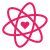

Mis mejores habilidades

Cuyos intereses y habilidades predominantes son por la Biología de la conservación y la investigación científica, me apasionan los enigmas marinos y sobre todo, sus paisajes tan hermosamente peligrosos.
Mi preparación universitaria en Biología marina la desarrollé en la Universidad Autónoma de Yucatán en el año 2020 y finalicé este 2024, estoy en proceso de liberación de mi cédula profesional pero cuento actualmente con mi carta pasante y certificado de estudios para corroborar mi desempeño académico.
Poseo el promedio mas alto de mi generación y he participado en diversos trabajos de doctorado y voluntariados, desde trabajar con mamíferos marinos, especies silvestres terrestres, animales domésticos y de producción, algas, manglares y bacterias nativas.
Mi experiencia laboral la he desarrollado en diversas áreas, como encuestadora en una empresa de elaboración de alimentos y bebidas nuevos en el mercado mexicano, en una empresa privada etiquetadora de chocolates extranjeros y en una consultoría ambiental encargada de desarrolar estudios y trámites ambientales, manifiestos de impacto ambiental y gestión ambiental.
Este proyecto es un clon de la interfaz de inicio de Pinterest, creado exclusivamente con HTML5 y CCS3.
Check it outProyecto de página web de bisutería a base de desechos pesqueros en el Caribe Mexicano en proceso...
Check it out